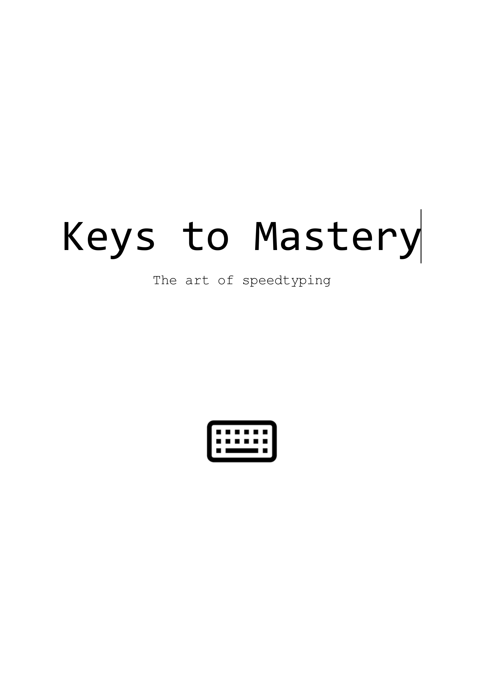
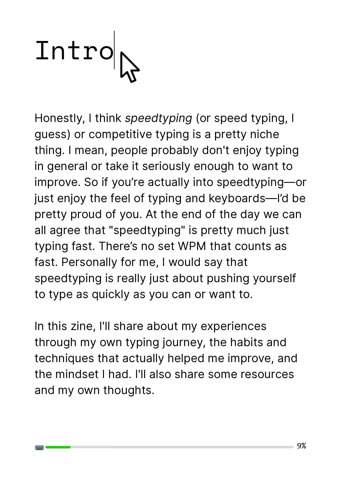
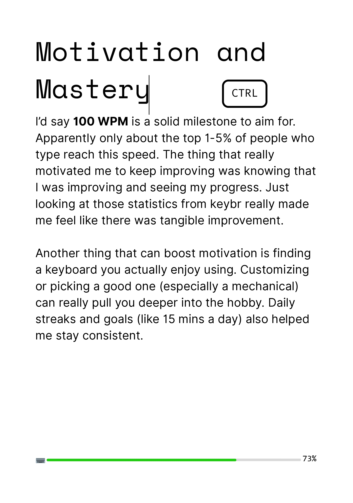
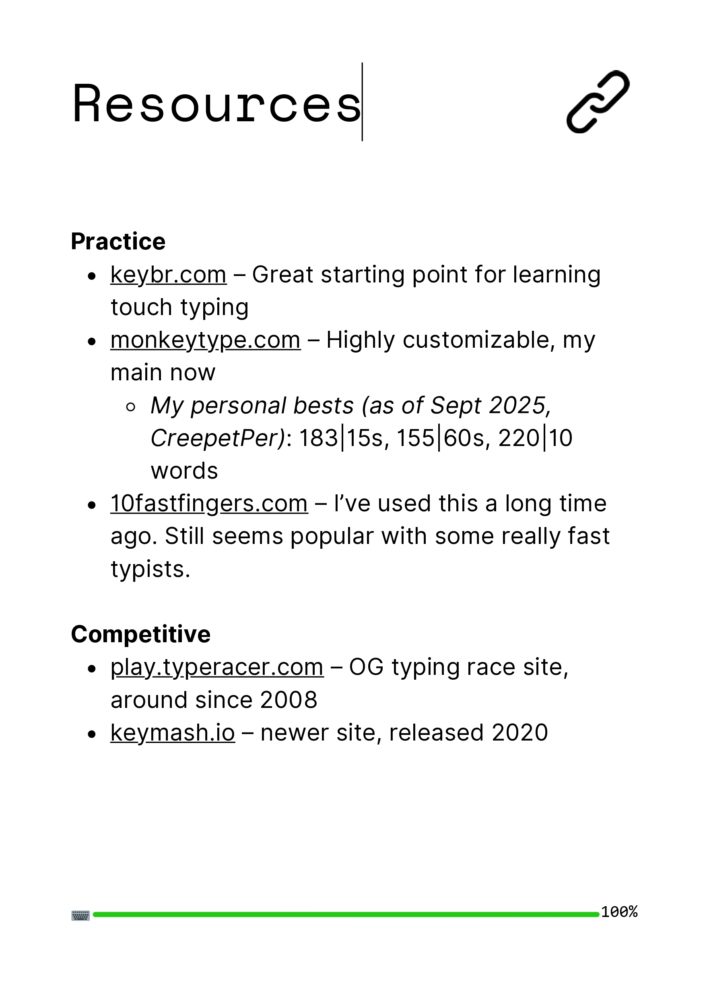

About the Zine
This zine is about my speedtyping journey. It talks about what made my typing better, what didn't work, and the habits that helped me reach my goals. It includes my personal rules for practice, my favorite typing websites, and small but valuable lessons I've learned over time.
The main message is to practice smart and stay disciplined: accuracy before speed, consistency over random motivation, and patience with your own pace. I chose this topic because speedtyping became something I genuinely enjoyed and got good at, and I realized it can be useful for anyone who types a lot in general.
How It Started
It all started at the beginning of the pandemic when I felt the urge to type faster. One of the first videos I remember that suddenly motivated me was PewDiePie taking tests on humanbenchmark.com , which had its own typing test. I saw him reaching 100 WPM, and felt like if he could do it, then I could too. So, I became serious about improving my typing speed. It took some months of experimenting with different websites, and eventually, I stuck with keybr.com (early days of improving) and monkeytype.com (my main now). Eventually, my classmates noticed my typing speed and were impressed, which made me want to become even faster.
I was inspired and motivated by websites such as keybr.com and monkeytype.com , which I found both effective for improvement and aesthetically pleasing. I was also motivated by people on YouTube typing really fast (200 WPM+) and by hearing about others' experiences with typing websites. I'll admit, I used to feel like I wanted to be the fastest in school and even the world at some point. All of these things influenced the zine's focus on my personal journey, as well as motivation and mindset.
Making the Zine
I mainly used Canva to create this zine. I also used ChatGPT to help with ideas for the outline, format, design, and icons. For the physical copy, I used Online2PDF to print the booklet in the correct page order (A4 folded into A5).
01 PLANNING
I first brainstormed and drafted possible zine ideas, including titles, structure, and design. Later, I used ChatGPT to refine my draft and generate additional design ideas, especially icons and typography direction.
02 TOOLS
- Canva — layout, typography, icons, page design
- ChatGPT — brainstorming + editing + design decisions
- Online2PDF — converted PDF into A5 booklet print layout
03 DESIGN
- Format: A5 booklet (A4 folded), saddle-stitched
- Style: Minimalist, DIY zine aesthetic
- Typography: Space Mono for headers + Inter for body readability
- Color palette: Mostly black/white with a single green accent
- Progress bar: Green bar + percentage at the bottom of content pages
- Icons: Keyboard/computer-centric icons per section
- Layout consistency: Same font sizes + structure across sections
- Tone: Casual, reflective writing instead of instructional
04 CHALLENGES → FIXES
Tip: hover a challenge to reveal the fix.
- Text felt too long for pages → Broke paragraphs into smaller chunks instead of shrinking font size
- Progress bar accuracy → Used rounded rectangles in Canva, resized mathematically for correct %
- Too many ideas for one section → Split into core sections + separate “Yap” section
- Icon consistency concerns → Allowed intentional exceptions while keeping most icons uniform
- Layout vs readability balance → Kept font size consistent and adjusted spacing / added pages instead
- Booklet page order for printing → Used Online2PDF to auto-arrange pages for A5 booklet printing
- Back cover felt empty → Added terminal-style “Press any key to continue…” ending
Who This Is For
- Target audience: Anyone who is interested in improving their typing speed or typing in general
- Purpose: To inspire and motivate others using my real experiences, and to give practical habits/resources that actually helped me improve
- How I designed for them: Casual and personal language, sharing my own experiences and things that worked for me and some tips that I thought were useful for others, short sections with clear headings for easy skimming, and a dedicated resources page so readers can start practicing immediately
Preview



